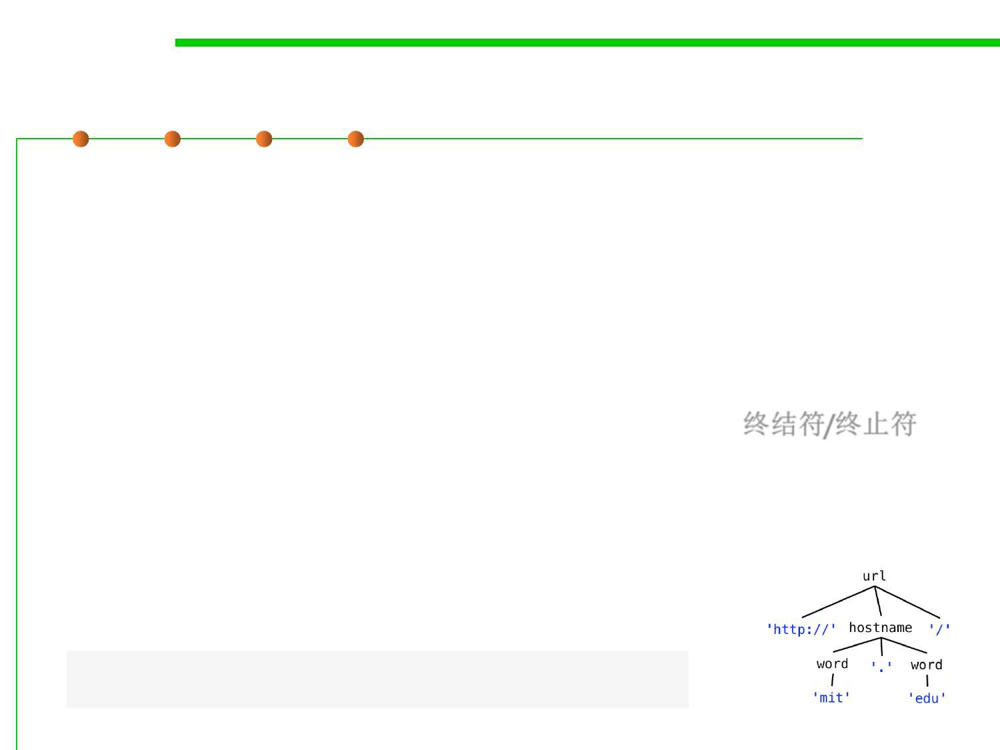

6.3 Maintainability-Oriented Construction Techniques
Terminals: Literal Strings in a Grammar
▪ To describe a string of symbols, whether they are bytes, characters,
or some other kind of symbol drawn from a fixed set, we use a
compact representation called a grammar.
▪ A grammar defines a set of strings.
– For example, the grammar for URLs will specify the set of strings that are
legal URLs in the HTTP protocol.
▪ The literal strings in a grammar are called terminals.终结符/终止符
– They’re called terminals because they are the leaves of a parse tree that
represents the structure of the string.
– They don’t have any children, and can’t be expanded any further.
– We generally write terminals in quotes, like 'http' or ':'.
url ::= 'http://' hostname '/'
hostname ::= 'mit.edu' | 'stanford.edu' | 'google.com'